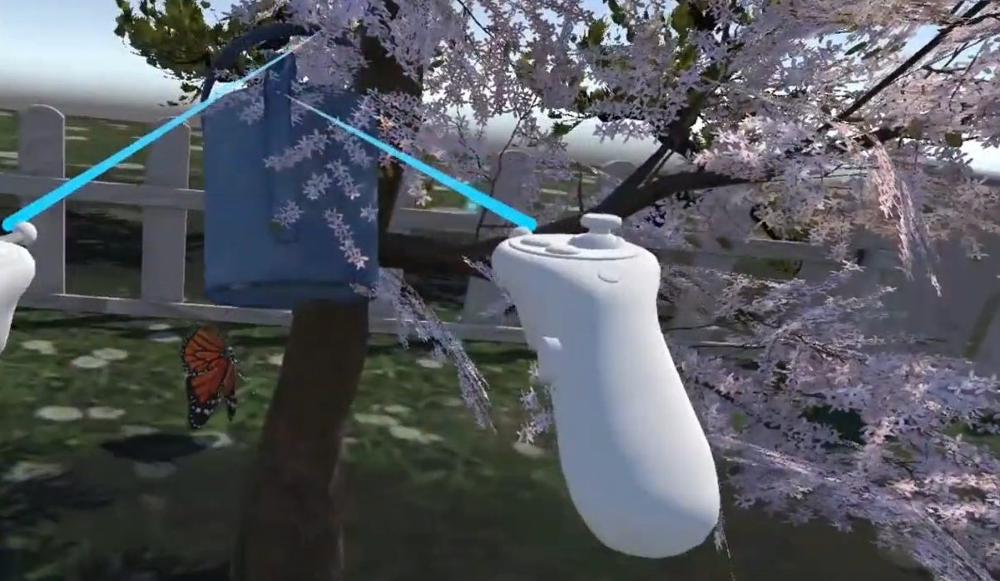
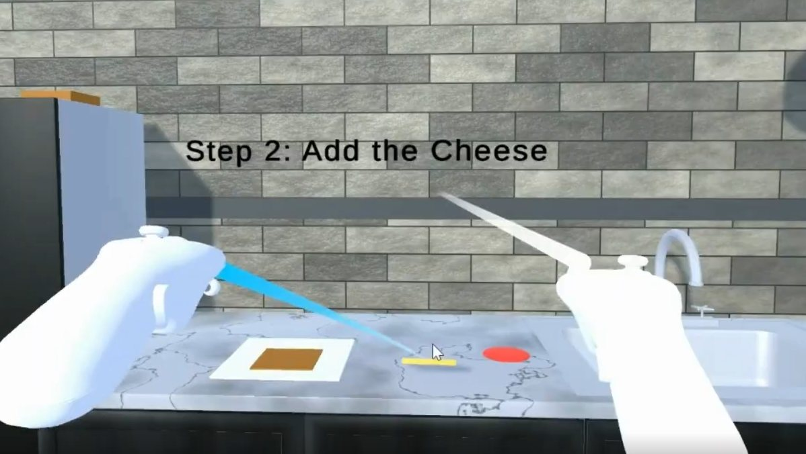
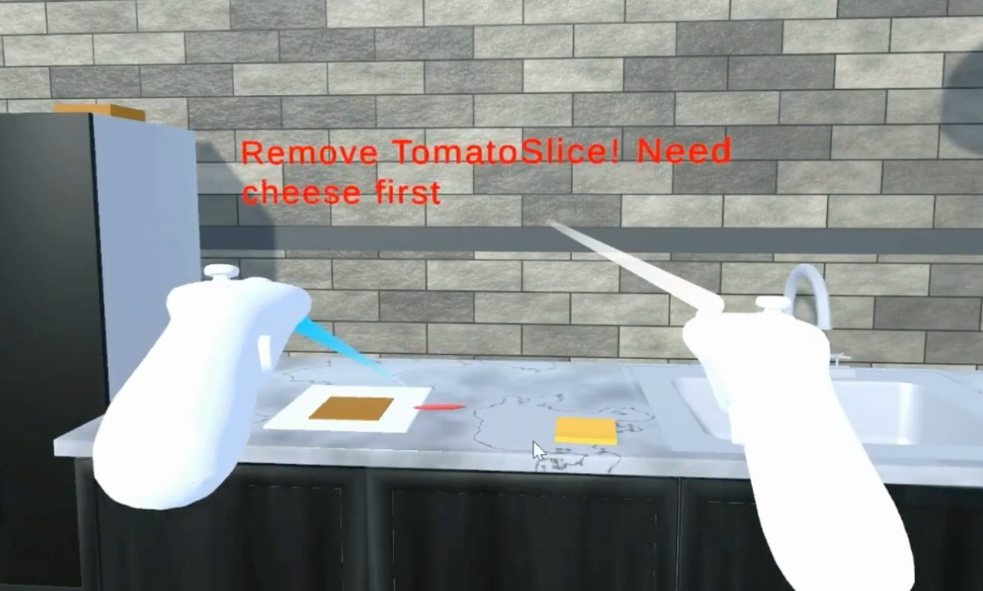
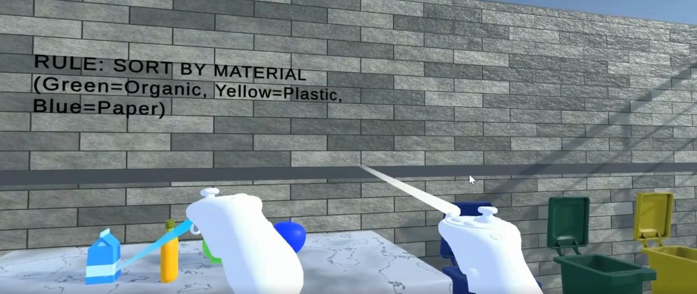
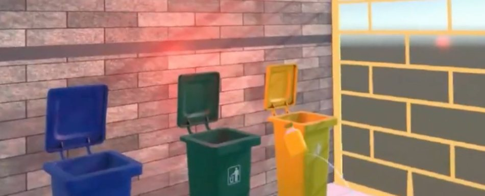
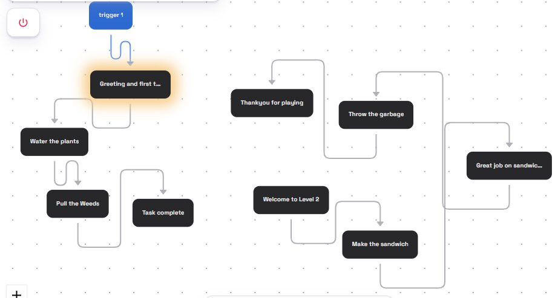
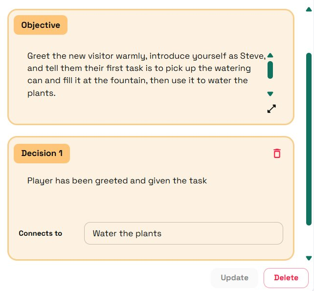

01 · The gap
Ordinary tasks are the hard part
People with ADHD often struggle with anything that asks for sustained attention, and small outside stimuli pull focus away fast. On top of that there is the emotional side: frustration when a task drags, and a guilt that shows up around performing well or badly. Mundane tasks become a hassle, engagement drops, and that carries into school and work.
Training that attention usually means drills that feel like drills. We wanted the opposite: a space where the distractions are real but controlled, where every action gets an immediate reward, and where a patient voice keeps you company through the boring bits.
Can a game make attention practice feel rewarding instead of punishing, and hold the distractions at a level the player can actually work through?
02 · The game
Two scenes, a handful of chores
The game is two connected scenes, a garden and a kitchen, each with a couple of tasks. The garden runs on audio and visuals; the kitchen switches to text instructions on purpose, so we could feel the difference when the guidance is not spoken. An AI virtual human moves between them with you, explaining tasks, answering questions, and walking you to the next area when you are done.
What it trains
- Sustained attention, holding focus while things try to pull it away
- Selective attention, picking the right targets out of a busy field
- Alertness to change, adapting when the rule shifts under you
- Executive function, working through a multi-step task in order
What it gives back
- Immediate audio and visual feedback on every correct action
- Distractions kept in a controlled range, never overwhelming
- Encouragement and error correction from the AI guide
- Steps broken small to keep cognitive load down
03 · The garden
Water the trees, pull the weeds
The first task trains sustained attention. You pick up the watering can, fill it at the fountain, a bubbling sound confirms it, then carry it to the trees. As you water, the trees grow, so progress is visible the whole time. Meanwhile butterflies drift across your view and birdsong plays around you. Those are the controlled distractions: enough to pull at your focus, not enough to stop the task.

Next is weeding, which trains selective attention: the weeds sit among the fruit trees and you have to single them out. Clear them all and the fruit trees grow bigger. When each task is done, Steve compliments the work and then leads you to the portal gate for the next scene.
04 · The kitchen
Text instructions, on purpose
The kitchen drops the spoken guidance and uses on-wall text instead, so we could see how performance changes without the audio-visual scaffolding. The first task is making a sandwich, shown one step at a time. Breaking a multi-step job into small ordered steps keeps the cognitive load low, and if you do something out of order the system says so and tells you how to fix it.


The second task is sorting waste into bins, and the rule keeps changing: sometimes sort by colour (blue, green, yellow), sometimes by material (paper, plastic, glass). The rule is always shown as colour and text together, so it never depends on reading alone. A correct bin lights green with a confirming sound; a wrong bin lights red so you can correct it. Because the rule shifts, the task trains alertness to a changing environment.


05 · The AI guide
Steve, built in Convai
The virtual human was made with Convai, which handles voice recognition, lip sync and real-time responses between Unity and its servers. Steve is not just a talking head: a narrative flow gives him knowledge of the current task, so he can greet you, hand out the next job, take questions, and react when you finish. His personality is adjustable too, calm, mature, friendly, which matters when the player is someone who gets frustrated easily.


On the headset we could only run the pre-scripted pipeline: we could not get live microphone input working with the Vive Cosmos, though it works fine with a keyboard to toggle the mic. The Convai trial key also caps tokens, so we kept the number of interactions small.
06 · Building it
Assets, audio, feedback
Most environment models came from Sketchfab, retextured and adjusted in Blender to fit the scenes; small props like the bread, tomato and cheese slices were modelled in Unity. Then came the animations and the spatial audio. The fountain is animated with a falling-water sound that scales with distance, so it is loud up close and quiet as you walk away. The watering can bubbles when it fills, water particles land on the trees as they grow, and throwing a weed plays a mud sound. Audio came from Pixabay, which is a good source of 3D stereo clips. The kitchen instruction screens and the bin lights were built in Unity to give that instant feedback.
07 · What we learned
The rewards landed, the pacing did not
We tested the final build with two people with ADHD. The audio-visual feedback and the small rewards on finishing a task worked well, that was the part they enjoyed. The tasks themselves felt too long or too slow and got frustrating, which is a very ADHD response and a clear signal that the pacing needs to adapt to the player. They liked having the AI guide, but said he talked too long and gave too much at once.
Limits
- Two testers, no logging or data collection, so we cannot measure whether the training actually helps.
- Live voice input never worked on the Vive Cosmos, so headset testing used the scripted pipeline only.
- The Convai trial cap kept interactions short and limited how far we could push the guide.
Next
Adaptive difficulty so tasks scale with the player as they improve, tasks with time pressure and a memory component, a shorter and more responsive guide, and proper logging of completion time and error rate so the next round of testing produces real data.